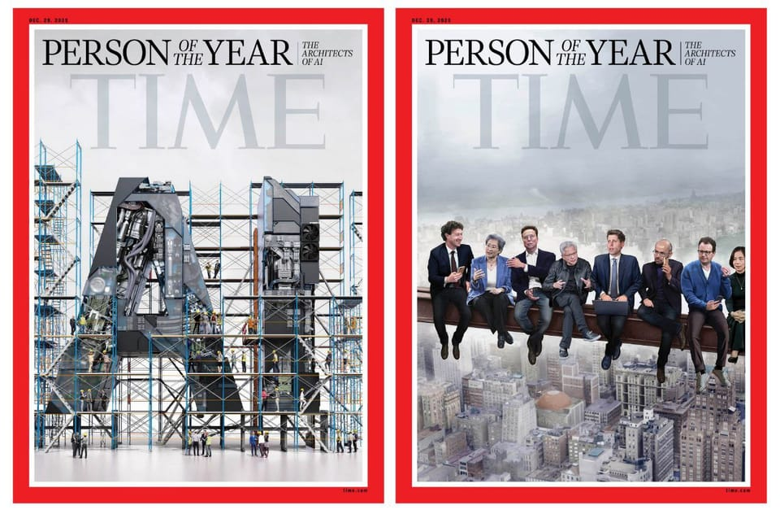

世界苦茶12月11日新闻 | 37条 | 中央经济工作会议召开

中央经济工作会议召开 | 墨西哥通过对华加征关税法案 | 汕头火灾导致12人遇难 | 特朗普扣留大型委内瑞拉油轮 | 美联储连续降息25个基点
苦茶数据
美元兑人民币：7.05（昨日7.06，前日7.06）
美元兑日元：155.19（昨日156.71，前日156.28）
上证指数：3873（昨日3900，前日3909）
标普500指数：6864（昨日6840，前日6846）
比特币：89995（昨日92390，前日90580）
布伦特原油：60.99（昨日62.19，前日63.43）
中国新闻
**• 中共12月10至11日开中央经济工作会议，认为外部环境变化影响加深，国内供强需弱矛盾突出，重点领域风险隐患较多。 **
过去一年顶压前行，这些问题经过努力可以解决。把稳增长、促物价合理回升作为货币政策重要考量，灵活高效降准降息。重视解决地方财政困难。规范税收优惠、财政补贴政策。督促各地主动化债。优化融资平台的债务重组和置换办法。适当增加中央预算内投资规模，优化地方专项债用途管理，推动投资止跌回稳。优化“两新”政策实施。深化公积金制度改革。优化自贸区布局范围。普通高中、优质高校本科扩招。优化药品集采。倡导积极婚育观，努力稳定新出生人口规模。营造良好的政治、人才、营商、舆论环境，充分激发社会正能量。各地自觉按规律办事，完善差异化考核评价体系。
• 汕头五金店自建房起火 一家四代12人遇难。
香港宏福苑大火发生两周后，广东省汕头市一处自建房发生火灾，造成一家四代12人遇难。广东省政府宣布成立事故调查组，彻查火灾原因。综合新华社、央视新闻等媒体报道，汕头市潮南区峡山街道丹凤路上的裕丰五金电器店，星期二晚9时20分突发火灾。被困20人中有八人获救，八人当场死亡，另有四人送院后不治。五金店主女儿告诉媒体，她的父母、奶奶、弟弟和其孩子等住在楼上的多名亲人遇难，仅有嫂子成功逃生。当地消防部门星期三通报，经初步勘查，起火建筑为一栋四层钢筋混凝土结构自建房，过火面积约150平方米。广东省政府同天宣布成立多部门组成的事故调查组，彻查火灾事故原因。
• 随着国会寻求遏制北京的影响力，美国委员会呼吁增设更多普通话课程。
一项关注中国法治与人权的两党委员会建议，美国国会应扩大在美国高中和大学的沉浸式普通话及其他中国大陆语言课程。该建议出现在国会-行政当局中国委员会的年度报告中。自美国总统唐纳德·特朗普第二任期开始以来，华盛顿已削减对文化交流项目的资助。与此同时，美国立法者正推动限制中国对美国中小学的影响，要求将联邦资金与切断与与中国政府有关实体的机构联系挂钩，并施加新的透明度与披露要求。CECC表示，改善美国学生获得普通话，维吾尔语和藏语的机会，将深化语言与文化专业知识，使美国更好地应对北京增加影响力的“恶意”企图。
• 广州吉卜力主题展览会延期。
原定于12月25日在广东省广州市开幕的以吉卜力工作室为主题的展览会「吉卜力工作室物语·宫崎骏电影世界的奇境漫游」已确定延期。活动官方社媒帐号于12月8日发布了这一消息。近期，受中日两国关系紧张的影响，日本相关活动接连宣布取消，此次展览会也被认为受到相关影响。官方帐号发布的公告并未说明延期原因，仅表示「后后续安排，我们将第一时间通过各官方渠道向大家发布」，同时提到「期待在不久的将来，我们能早日再见」。吉卜力的展览会曾于2024年在上海举办。本次广州展会原计划举办至2026年10月。
• 中日班轮「鉴真号」暂停客运。
连接中日之间的班轮「鉴真号」 连接大坂、神户与上海的班轮「鉴真号」自12月6日从上海出发的班次开始暂停旅客运输。其官方网站于12月8日发布了这一消息。该班轮由中日合资公司运营，据悉中方以「无法确保安全」为由发出了停运通知。此举被认为受到了中国政府呼吁本国公民谨慎赴日等措施的影响。鉴真号隔周分别从大坂和神户出发，往返上海需要两天时间。额定载客人数为约200人。搭载旅客的最后一个班次是12月2日从大坂港出发的班次。自12月6日从上海出发的班次开始，仅运输货物。对于已预订船票的乘客，将采取全额退款等应对措施。
印太新闻
• 国台办与国民党双双否认习郑会消息 民进党讽“一个鼻孔出气”。
台湾媒体称中断10年的国共两党领导人会面有望在“三张门票”前提下举行，中国大陆国台办和国民党双双否认报道内容，招来民进党讽刺国共“一个鼻孔出气”。亲绿营台媒《自由时报》上星期天报道，国民党主席郑丽文将在农历年前后与中共总书记习近平会面，北京还提出涉及军售、交流、统一的“三张门票”前提，要求国民党挡下民进党政府提出的军购案。大陆国台办发言人陈斌华星期三上午在例行记者会上回应称：“《自由时报》向来以虚假报道见长，相信大家已见惯不怪。相关报道纯属无中生有，凭空捏造。
• 韩国对中国和俄罗斯军机进入其领空提出抗议。
韩国就中国和俄罗斯军机进入其防空识别区提出抗议 韩国就中国和俄罗斯驻韩国防武官提出了交涉，此前一天两国军机进入了其防空识别区。首尔表示，在周二有七架俄罗斯和两架中国军机“短暂进入”该识别区后，派出战机“采取战术措施以防万一”，但并指出这些飞机“并未违反”韩国领空。一些国家划定了防空识别区，要求外国飞机进行识别。这些识别区并非国际法下的主权领空。今年三月，首尔在数架俄罗斯军机进入该识别区后也曾派出战机。据韩国媒体援引参谋长官官员的话称，俄机进入了靠近郁陵岛和独岛的韩国防空识别区，而中方飞机则进入了靠近苏岩礁的区域。官员称，双方飞机随后在日本对马岛附近的空域重新集结。
• 随着冲突持续，美国敦促泰国与柬埔寨停止交战。
随着边界冲突持续第三天并已造成至少10人死亡、数十万人流离失所，美国已要求泰国和柬埔寨“立即停止敌对行动”。国务卿马可·鲁比奥表示，两国必须遵守由美国总统唐纳德·特朗普在十月斡旋的和平协定中列出的降级措施。特朗普也表示，他将“打个电话”以制止战斗，这是自七月冲突造成数十人死亡以来最严重的升级。两国互相指责对方重新挑起冲突，冲突中出现了空袭和炮火交火。三天敌对行动的死亡人数为10人——柬埔寨7人，泰国3人。泰方官员称已疏散超过40万人，金边方面则称柬埔寨一侧已有10万人被转移到庇护所。泰国国防部周三表示，军事行动“规模有限，作为最后手段使用”。
• 高市早苗表示因中日关系希望尽早见川普。
日本首相高市早苗12月10日在众议院预算委员会上表达了举行日美首脑会谈的强烈意愿。她表示：「无论是我前往华盛顿，还是川普总统出访海外时，我都希望能尽早与他会面」。这是她在回答国民民主党党魁玉木雄一郎质询时作出的表态。玉木雄一郎指出，鉴于当前中日关系持续恶化，指出日本应该在川普总统访华之前与其举行首脑会谈。对此，高市早苗回应称：「通过电话等方式与川普总统进行各种沟通，并且也正向七国集团其他成员国呼吁提供资讯」。玉木雄一郎称中国正在发动资讯战，呼吁进一步加强日美合作。
**• 缅甸军方12月10日晚空袭了若开邦由若开军控制地区的一家医院，造成34名患者和医护人员死亡，另有约80人受伤。 **
• 越南政府修订法律以禁止出口稀土原材料。
越南国会通过禁止出口稀土原材料，作为该国地质与矿产法全面修订的一部分，该修订加强了对矿床的控制，并为该行业制定了新规。根据这项将于一月生效的新法律，政府将严格控制稀土的勘探、开采和加工，并禁止出口稀土原料。只有获得政府批准的企业才被允许开采、加工和使用稀土。新法律规定，将鼓励在稀土的提取、选矿、分离和深加工技术方面开展国际合作，以支持国内稀土产业的发展。稀土深加工必须与工业生态系统的发展相连接，以提升越南的本地价值链，并确保稀土领域的自给自足。此外，越南农业与环境部正在制定一项稀土矿产国家战略，该战略将于2026年初提交政府。
科技新闻
• 前美国国家航空航天局局长呼吁美国采取新的登月策略。
前美国航天局局长呼吁美国对登月采取新方法——类似中国的做法 76岁的航空航天工程师迈克·格里芬曾在乔治·W·布什政府期间担任NASA局长，他在国会表示，阿尔忒弥斯计划“行不通”，因为其依赖过于复杂的设计和许多未经验证的技术。按照现行计划，阿尔忒弥斯III任务要在轨至少为其巨型登月器加注燃料十几次，并长期储存超低温推进剂——这些以及其他从未在太空中验证的技术，都是为了在2027年将两名美国人送上月球所必需的。“阿尔忒弥斯III任务以及后续任务应该被取消，我们应当重新开始，”格里芬在上周四的众议院听证会上说。他敦促立法者改用一种更精简，更加成熟的双发射构型。
•《时代》杂志将“AI设计师”评为年度人物。
美国《时代》杂志今天公布2025年年度风云人物，由人工智能的设计师们获得殊荣。时代杂志于社交平台 X 发布的照片显示，一群科技企业的领导人坐在一根钢梁上，其中有AI芯片巨头英伟达首席执行官黄仁勋、美国芯片设计大厂AMD首席执行官苏姿丰以及全球首富马斯克等人。从1927年以来，时代杂志每年都会选出年度风云人物，无论获选人物或团体的影响力是正面或负面，都对过去12个月的时事及世界脉动具有重大影响。特朗普赢得2024年美国总统大选且二度入主白宫，他因此荣获时代杂志当年度风云人物。
经济新闻
• 墨西哥对华加征关税法案将获通过。
墨西哥国会众议院当地时间周三不顾北京强烈反弹，表决通过一项措施，将对中国及其他没跟墨西哥签署贸易协定的亚洲国家加征关税，法案接下来将送交参议院审议。这项由总统谢因鲍姆主导的法案，将提高进口汽车、纺织品、服装、塑胶、家电及其他产品的关税，首当其冲的就是中国商品。拟议的关税税率已从原先建议的50%下修，多数品项将被征收20%或35%关税，维持 50%高额关税的情况相对较少。政府希望强化国内市场，减少对进口商品的依赖，但反对这项关税的人警告，加税可能导致国内物价上涨。
• 格里尔称：随着贸易紧张局势缓和，美国寻求与中国进行“建设性”重启。
美国寻求与中国“建设性”重置 贸易紧张缓和：格里表示 在贸易紧张局势缓解之际，驻美贸易特使称华盛顿旨在稳定关系，尽管在关键矿产和人工智能芯片问题上仍存争议 阅读时间：3分钟 为什么你可以信任南华早报 华盛顿—美国首席贸易特使詹米森·格里表示，在经历了今年的贸易冲突后，美国正努力与中国建立更“建设性”的关系，并将继续推动“双边有序”的贸易关系，尽管外界仍对中国在关键矿产上的控制力以及白宫最近批准H200人工智能芯片销售一事表示担忧。格里的表态出现在北京和华盛顿全年就关税问题激烈交锋之后。中国政府对稀土实施了出口管制，且当时美方将对华关税提高到接近贸易禁运的水平时，中国还曾拒绝进口美国大豆。
• 中国承诺向拉丁美洲和加勒比提供援助，不设“政治条件”。
中国在力图成为全球南方的重要声音并扩大在该地区的影响力之际，承诺向拉美和加勒比国家提供无附加政治条件的援助，该地区也是美国积极争取的对象。新华社周三全文发布了这一策略文件的第三篇类似文件。文件称：“全球经济增长动力不足，局部冲突和动荡频繁发生，单边霸凌行为破坏国际和平与安全，人类社会正面临前所未有的挑战。作为一个发展中国家和全球南方成员，中国始终与包括拉美和加勒比在内的全球南方国家有着休戚与共的命运。
• 中国主权财富基金披露在特朗普胜选后开设了伦敦办事处。
中国的旗舰主权财富基金透露，在特朗普赢得去年的美国总统选举后不久，于2024年12月在伦敦开设了代表处，这是继香港和纽约之后的第三个海外办事处。该机构表示，新设的伦敦代表处将有助于促进沟通、开展研究与分析，并支持项目来源、尽职调查与投后管理。此举正值中国投资公司在美国因国家安全担忧而面临日益审查之际，同时中英关系趋于缓和。知情人士称，这一计划在2015年启用的纽约办公室在贸易战—即2018年特朗普首次任内对华发起的贸易战—开始后面临日益困难时再次被提出。
• 在其最艰难的抉择之一中，意见分歧的美联储将再次降息。
美联储周三再次下调利率，继续努力保持劳动力市场稳定，尽管包括多位关键官员在内的人士反对，他们认为央行应优先应对不断上升的生活成本。不过，这可能会是短期内的最后一次降息。在会后新闻发布会上，主席杰罗姆·鲍威尔表示，进一步降息将更难以论证，并多次强调央行今年已三次降息。“我们处于有利位置，可以等待，观望经济如何发展，”鲍威尔说。多数决策者投票决定将基准借贷利率连续第三次下调25个基点，至3.5%至3.75%区间，为三年多来的最低水平。
• 商会报告警告：欧盟企业需要放弃对中国和美国的过度依赖。
驻华欧盟商会敦促企业“消除单一来源依赖” 一份新报告建议欧洲企业在供应链上避免对中国或美国过度依赖，因为企业正被夹在北京对本土企业的倾斜政策与华盛顿的贸易波动之间。欧盟驻华商会在周三发布的《应对供应链依赖》报告中建议企业“在可能的情况下，消除对中国和美国的单一来源依赖”。商会会长延斯·埃斯凯伦德在此前的媒体简报会上表示：“我们在理解这些依赖关系时可能只是看到了冰山一角。”他指出欧洲产业对中国投入品的高度依赖，“我甚至不确定没有中国，欧洲能否制造出牙膏。
• 尽管增速放缓，广东仍目标到2035年实现GDP翻一番。
中国广东力争到2035年实现GDP翻一番，尽管增长放缓 大湾区南部省份自2021年起未能达到全国平均水平，但新的提案把希望寄托于高科技产业 “展望中共二十大到2035年，广东力争在13年内实现社会主义现代化，建设现代化的新广东，”省政府周一发布的五年规划建议中写道。“到那时，全省经济总量将实现翻番，地区人均国内生产总值将达到中等发达国家水平。” 广东2022年GDP约为13万亿元人民币。到2035年实现翻番将使其达到约26万亿元，相当于当今世界第七大经济体——超过法国，仅次于英国。
俄乌战争
• 比利时要求对俄罗斯资产的贷款增加额外现金缓冲。
根据POLITICO获得的文件，比利时要求欧盟提供额外现金缓冲，以防克里姆林宫对利用俄罗斯资产向乌克兰提供价值2100亿欧元贷款的威胁。该现金缓冲是比利时希望对欧盟委员会提案进行的一系列修改的一部分，该提案拟通过动用由总部位于布鲁塞尔的金融托管机构Euroclear持有的1850亿欧元被冻结的俄罗斯国家资产来融资。剩余的250亿欧元将来自散布于欧盟境内私人银行账户的其他被冻结的俄罗斯资产——主要在法国。
• 特朗普要泽连斯基圣诞节前回应和平协议。
美国总统特朗普要求泽连斯基尽快就和平协定做出决定，最好在圣诞节前。基辅目前进退两难，他们无法接受割地条件，另一方面，他们也很难拒绝美国的要求。 《金融时报》周二援引知情官员报道，特朗普总统的特使给予泽连斯基仅“数天”时间，来对美方拟定的和平协议做出回应。这份协议被认为带有很强的俄罗斯手笔，以出让乌克兰领土，换取美国尚十分模糊的安全保证。乌克兰总统泽连斯基周一在伦敦会晤了英法德领导人。他告知，在上周六长达两小时的通话中，特朗普的特使威特科夫和美国总统的女婿库什纳敦促他迅速做出决定。一位知情人士表示。
• 英特尔、AMD被指控允许芯片用于俄导弹。
英特尔、AMD和德州仪器在一系列诉讼中被指控未能阻止其技术流入俄制武器，这些武器被用于杀伤乌克兰平民。根据周三在得州法院提起的五起诉讼之一，当第三方违反美国制裁向俄罗斯转售受限芯片以驱动无人机和导弹时，这些公司表现出“故意无视”。由米卡尔·瓦茨及知名律师事务所贝克·霍斯泰特勒代表数十名乌克兰平民提起的诉讼，引用了 2023 年至 2025 年间导致数十人死亡的五次袭击事件。一次袭击据称涉及含有英特尔公司和AMD相关部件的伊朗制造无人机，其余袭击则涉及俄制KH-101巡航导弹和伊斯坎德尔弹道导弹。律师瓦茨周三表示：“这些公司知道他们的芯片技术正流入俄罗斯。”
世界新闻
• 特朗普介入华纳兄弟之争，称“必须出售CNN”。
唐纳德·特朗普总统周三直接插手华纳兄弟探索公司控制权之争，表示“必须把CNN卖掉”，并抨击该网络的新闻报道。特朗普在白宫圆桌会议上的言论表明，他倾向于派拉蒙对WBD发起的恶意收购要约，尽管他并未点名派拉蒙。由首席执行官大卫·埃里森领导，并获得其父亲，亿万富翁及甲骨文联合创始人拉里·埃里森支持的派拉蒙，是唯一试图收购包括CNN在内整个WBD的公司。上周，奈飞签署了一项协议，收购华纳兄弟和HBO，但不包括该新闻品牌。“你们有一些不错的公司在竞购，”特朗普在回应《纽约邮报》记者杰夫·厄尔提出的“在新领导层下，你希望看到CNN有哪些变化？”时说。
• 法官以严厉斥责阻止特朗普在洛杉矶部署国民警卫队。
根据旧金山美国地区法官查尔斯·布雷耶的裁决，特朗普政府必须结束对洛杉矶国民警卫队的部署，并将部队控制权交还给州政府。布雷耶法官向反对总统自六月起使用州属部队的加州官员发出初步禁令；当时联邦政府在州长加文·纽瑟姆反对下接管了州警卫队，以应对洛杉矶围绕移民执法行动的抗议。此裁决是特朗普政府一系列法律挫折中的最新一起。联邦政府以打击犯罪、保护联邦移民设施和执法人员为由，已在全国多个由民主党执政的城市部署国民警卫队。几乎每一次部署目前都陷入法律纠纷，案件上诉至美国最高法院。
• 欧盟议会中左派首领称，冯德莱恩通过推动放松监管在迎合特朗普的议程。
欧洲委员会主席乌尔苏拉·冯·德莱恩“正在通过大幅削减对企业的监管来接纳特朗普的议程”，这是欧洲议会社会党与社会主义者集团负责人伊拉特克塞·加西亚的说法。加西亚抨击委员会在推进涵盖绿色、农业、数字和国防规则的综合简化法案时表现出的“彻底放松管制的狂热”，称这完全是照搬特朗普的剧本。加西亚认为，冯·德莱恩及其所属的欧洲人民党正在以“简化”为幌子，推动对欧盟法律的大幅倒退。
• 在推动为博尔索纳罗减刑期间，巴西国会陷入混乱。
周二，巴西议会陷入混乱，保守派议员继续推动一项将削减前总统雅伊尔·博索纳罗刑期的法案。一名左翼议员在试图干扰议事时被警方强行带走，视频显示保安试图恢复秩序时爆发了争执。博索纳罗因在2022年选举失利后企图策划政变，于去年11月开始服27年徒刑。他在国会的保守盟友提出一项法案，拟减少与政变相关罪行的刑期，并释放数十名在他离任后不久冲入政府大楼的博索纳罗支持者。与此同时，法庭文件显示，博索纳罗的律师团队已正式向法庭提出申请，要求准许其因手术离监。该上诉重申基于健康理由。
• 法国极右领导人巴尔德拉：‘我不需要像特朗普这样的大哥’。
国民阵线领袖乔丹·巴德拉坚持认为，他不需要美国总统唐纳德·特朗普来塑造法国的政治未来，因为他的极右翼政党瞄准2027年总统职位。“我是法国人，所以我不愿做附庸，我不需要像特朗普这样的大哥来替我的国家考虑命运，”他在周二晚间刊登于《每日电讯报》的一次采访中说。自上周美国发布国家安全战略以来，人们对美国可能介入欧洲极右翼政治的担忧激增；该战略主张“培养抵抗力量”以推动欧洲民族主义的兴起。
• 英国政府称特朗普攻击伦敦市长汗是“错误的”。
在唐纳德·特朗普对伦敦市长萨迪克·汗发起最新一轮抨击后，英国政府周三予以回击。美国总统在周一接受POLITICO采访时称汗“是个糟糕的市长”，并表示这位市长使这座英国首都变得“不像从前”。特朗普还谈到汗：“他是个无能的市长，但他是个可怕、恶毒、令人作呕的市长。我认为他干得很糟。伦敦已经变了。我爱伦敦。我爱伦敦。我不愿看到这样的情况发生。
• 为中情局作战的阿富汗人，如同国民警卫队袭击案嫌疑人一样，在美国面临严峻现实。
他们在阿富汗战争中执行过最艰险、最危险的任务，常在夜间突袭和城市枪战中与塔利班交锋。但据一位前中情局特工和一位曾在这些由中情局领导的“零单位”服役的前阿富汗战士告诉NPR，一旦被撤离到美国，许多在“零单位”服役的阿富汗战士发现自己因认为受到美国政府官僚式的忽视和抛弃而陷入绝望。在他们之中有拉赫马努拉·拉坎瓦尔，他被控在感恩节前夜于华盛顿特区向两名国民警卫队士兵开枪，致一人死亡、一人重伤。被背叛和挫败感深深刺痛，一些居住在美国的阿富汗士兵甚至开始以自残相威胁。“不幸的是，有四个人结束了自己的生命，”达武德说。
• 委内瑞拉反对派领导人马查多将不出席诺贝尔和平奖颁奖典礼。
马查多的女儿在委内瑞拉反对派领导人缺席情况下代表领取诺贝尔和平奖 马里亚·科丽娜·马查多自1月9日以来一直处于藏匿状态，未曾公开露面。1月9日她在加拉加斯参加一场支持者抗议时曾被短暂拘留。她的女儿安娜·科丽娜·索萨代她领受了这一奖项。挪威奥斯陆——马里亚·科丽娜·马查多的女儿周三在挪威代表母亲接受了诺贝尔和平奖，并在一篇由这位委内瑞拉反对派领导人撰写的演讲中表示，她的国家向世界展示了“我们必须愿意为自由而斗争”。马查多自1月9日以来一直藏匿，未再公开露面；当日她在委内瑞拉首都加拉加斯参与支持者抗议时曾被短暂拘留。
• 教宗敦促特朗普不要“拆散”美欧关系。
教皇利奥呼吁美国总统唐纳德·特朗普不要“拆散”跨大西洋联盟，此前这位共和党领导人在接受POLITICO采访时对欧洲进行了严厉批评。教皇在罗马附近卡斯特尔甘多尔福会见乌克兰总统弗拉基米尔·泽连斯基后对记者表示，特朗普最近将欧洲领导人贬为“软弱”、称该大陆“衰败”的言论，意在破坏美欧关系。“最近在采访中对欧洲所作的那些言论，我认为是在试图拆散我认为今天及未来都非常重要的一个联盟，”教皇利奥说。
• 据报道，尽管有特朗普促成的和平协议，叛军仍进入刚果一座关键城市。
叛军据报进入刚果关键城市 尽管有特朗普促成的和平协议 叛军已进入刚果民主共和国矿产丰富的东部地区最后一座由政府控制的城市，这一进攻迫使数千居民越境逃往布隆迪，居民称。乌维拉可以听到重型火炮和枪声，惊恐的居民形容局势混乱。尽管上周由美国总统唐纳德·特朗普居中斡旋、旨在结束长期冲突的和平协议在刚果总统费利克斯·齐塞克迪与卢旺达总统保罗·卡加梅之间达成，战事仍然升级。M23 叛军表示已“解放”该市，联合国支持的奥卡皮电台援引居民称叛军战斗人员已出现在主要街道上。然而，南基伍省省长让-雅克·普鲁西对当地媒体表示，军队及其盟友民兵仍然控制着该市。
• 埃隆·马斯克表示DOGE“在某种程度上是成功的”，但他不会再这么做了。
埃隆·马斯克表示，如果能重来一次，他不会再次领导政府效率署，但他仍认为该组织在唐纳德·特朗普总统任内试图缩减美国政府规模的动荡努力“有点成功”。这位特斯拉和SpaceX的亿万富翁老板在周二近一小时的《凯蒂·米勒播客》访谈中发表了上述看法。马斯克在最初承诺通过裁减联邦岗位、关闭政府项目等削减开支，年节约高达2万亿美元后，于五月离开了Doge。Doge的网站最后一次更新为10月4日，声称今年迄今已节省约2140亿美元。保守派播客主持人米勒本人曾任白宫顾问并曾作为Doge的发言人。
• 意大利烹饪获列入联合国教科文组织文化遗产名录。
意大利烹饪获联合国教科文组织列为特殊文化遗产 意大利烹饪已被联合国教科文组织授予特殊文化遗产地位。比萨等国家美食已列入教科文组织的“非物质文化遗产”名录，而现在意大利的烹饪传统及其传承和实践方式也获得了认可。自上任以来一直推动国家美食获认的总理乔治娅·梅洛尼表示：“对我们意大利人来说，烹饪不仅仅是食物或一堆食谱，它远不止于此：它是文化、传统、劳动、财富。”对数以百万计的爱好者而言，这一消息证实了他们的信念——从西西里卡诺利到卡拉布里亚的’Nduja，意大利料理是最棒的。该消息于周三在印度首都新德里的教科文组织大会上公布。
**• 保加利亚总理热利亚兹科夫12月11日宣布政府辞职。 **
此前，反对派提出不信任动议，理由是经济管理不善，公众对普遍腐败愤怒日益加剧。热利亚兹科夫在不信任动议投票数分钟前宣布政府辞职。保加利亚10日因政府提出加税、增加社保费用和增加支出预算而爆发大规模抗议活动。政府随后撤回了2026年预算计划。但抗议者的诉求已扩大到要求政府下台。
**• 特朗普12月10日称，美国以“非常充分的理由”在委内瑞拉海岸扣押了一艘“非常大的”油轮。 **
特朗普没有透露更多细节，表示稍后会详细说明。当被问及油轮运送的石油将如何处理时，特朗普说：“我想我们会保留它。”知情人士称，该油轮正驶向古巴。美国官员透露，此次扣押行动由美国海岸警卫队领导，并得到了海军支持，扣押是在美国执法部门的授权下进行的。美国在委内瑞拉海岸附近扣押的油轮为“船长”号。该油轮于12月2日离开委内瑞拉，所载约200万桶重质原油中的一半属于古巴的国营石油进口商。司法部长邦迪称，该油轮多年来因参与支持外国恐怖组织的非法石油运输网络而受到美国制裁。委内瑞拉表示，此次扣押是“无耻的盗窃”以及“国际海盗行为”。美国通过对委侵略达到掠夺能源的目的昭然若揭。声明表示，委内瑞拉的“自然资源、石油、能源，这些资源完全属于委内瑞拉人民”。